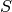

Hyperspectral image processing¶
Hyperspectral sensors produce images with hundreds of narrow spectral bands within the visible, near-infrared, mid-infrared and short wave infrared portions of the electromagnetic spectrum. This means that an entire spectrum is acquired at each point. The richness of this information is useful in many applications, like geology and agriculture.
This section presents OTB applications for hyperspectral image processing.
Unmixing¶
Because of the low spatial resolution of hyperspectral sensors, microscopic material mixing and multiple scattering, measured spectra are a mixture of the spectra of the materials actually in the scene. Thus, pixels are assumed to be mixtures of a few materials, called endmembers. In this section the mixing is assumed to be linear, i.e.
where, if l is the number of bands of the hyperspectral image, n the number of pixels and k the number of endmember:
- is the matrix of observed pixel, of size l.n
 is the endmember matrix, of size l.k
is the endmember matrix, of size l.k-  is the abundance matrix, of size k.n
 is the noise matrix, of size l.n
is the noise matrix, of size l.n
The unmixing problem is to estimate matrices A and S from R. The following presents an example of hyperspectral unmixing on a scene composed of several geological materials. The scene is an extract from the Cuprite dataset acquired by the AVIRIS sensor. The extract is available here and the whole dataset can be retrieved from AVIRIS NASA site.
{kind=link}
As the number of endmembers of the input image is unknown, the first step of the hyperspectral unmixing is to estimate this number. Here a HFC virtual dimensionality algorithm is used.
otbcli_EndmemberNumberEstimation -in inputImage.tif
-algo vd
-algo.vd.far 1e-5
This algorithm uses a Neyman-Pearson statistical test on the difference between the eigenvalues of the covariance matrix and those of the correlation matrice to estimate the number of endmembers. If the difference between the eigenvalues for one component is null, this means that no endmember is contributing to the correlation eigenvalue in addition to noise for that particular component, since the noise energy is represented by the covariance eigenvalue. The output of the algorithm is:
Output parameters value:
number: 19
The next step of the hyperspectral is to estimate the endmembers. This can be done using the Vertex Component Analysis algorithm (VCA).
otbcli_VertexComponentAnalysis -in inputImage.tif
-ne 19
-outendm endmembers.tif
The output of the application is an image containing k pixels, each pixel representing an endmember.
This algorithm is based on the research of the endmembers among the data. This means that a minimum of one pure pixel must be associated with each endmembers. The rationale behind this idea is that the hyperspectral mixed data is contained in a simplex of dimension k, where the endmembers are the vertices of the simplex. This algorithm is widely used in hyperspectral unmixing because of its low algorithmic complexity and the fact that the endmembers estimation is unbiased in absence of noise. However if the pure pixel hypothesis is not respected, there will be an estimation error on the endmembers.
The last step of the unmixing is to estimates the abundance matrix using an optimization algorithm.
otbcli_HyperspectralUnmixing -in inputImage.tif
-ie endmembers.tif
-out unmixedImage.tif
-ua ucls
Here an unconstrained least square algorithm has been used. The resulting abundance image is shown below:
{kind=link}
Anomaly detection¶
An anomaly is an element that is not expected to be found in a scene. The unusual element is likely different from its environment and its presence is in the minority scene. Typically, a rock in a field, a wooden hut in a forest are anomalies that can be desired to detect using hyperspectral imagery. Here an anomaly detection algorithm, the local Rx detector, will be used to detect small objects in urban environment. The input image has been acquired over Pavia University by the ROSIS sensor and has 103 spectral bands.
{kind=link}
A first optional step is to reduce the dimensionality of the input image in order to reduce the size of spectral data while maintaining information related to anomalies, here a Principal Component Analysis algorithm is used.
otbcli_DimensionalityReduction -in inputImage.tif
-out reducedData.tif
-method pca
-nbcomp 10
As the local Rx needs to compute and invert a correlation matrix on each pixel, applying dimensionality reduction as a preprocessing step will significantly reduce the computational cost of the algorithm.
The local Rx detection use a sliding window to compute an anomaly score on each pixel. This window consists of two sub windows, of radius ir and er, with ir < er, and centered on the pixel of interest. The local Rx score is computed by comparing the center pixel with the pixel belonging to the annulus.
otbcli_LocalRxDetection -in reducedData.tif
-out RxScore.tif
-ir 1
-er 5
Here anomalies are supposed to be small, hence a small internal radius should be chosen e.g. ir=1. Also as the environment is urban, and because the sensor has a low spatial resolution, the statistic of the background varies rapidly with the distance, so the external radius should not be too big, here er=5 has been chosen. These parameters really depend on the input image and on the objects of interest.
A threshold can then be applied on the resulting score image to produce an anomaly map.
otbcli_BandMath -il RxScore.tif
-out anomalyMap.tif
-exp "im1b1>100"
The value of the threshold depends on how sensitive the anomaly detector should be.
Left: Computed Rx score, right: detected anomalies (in red)